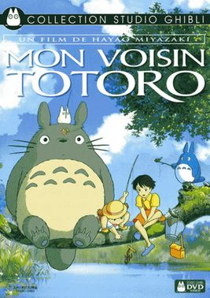

Le Chateau ambulant
année : 2004, genre: drame,fantasy,aventure
note:inspiré de l'éstéthique steampunk

Princesse Mononoké
année:1997 ,genre:aventure,fantasy,héroisme
note:Voyage au sein d'un pays qui place l'industrie avant le respect de la nature

Mon Voisin Totoro
année: 1988, genre: aventure
note:Ode à la découverte de la nature
